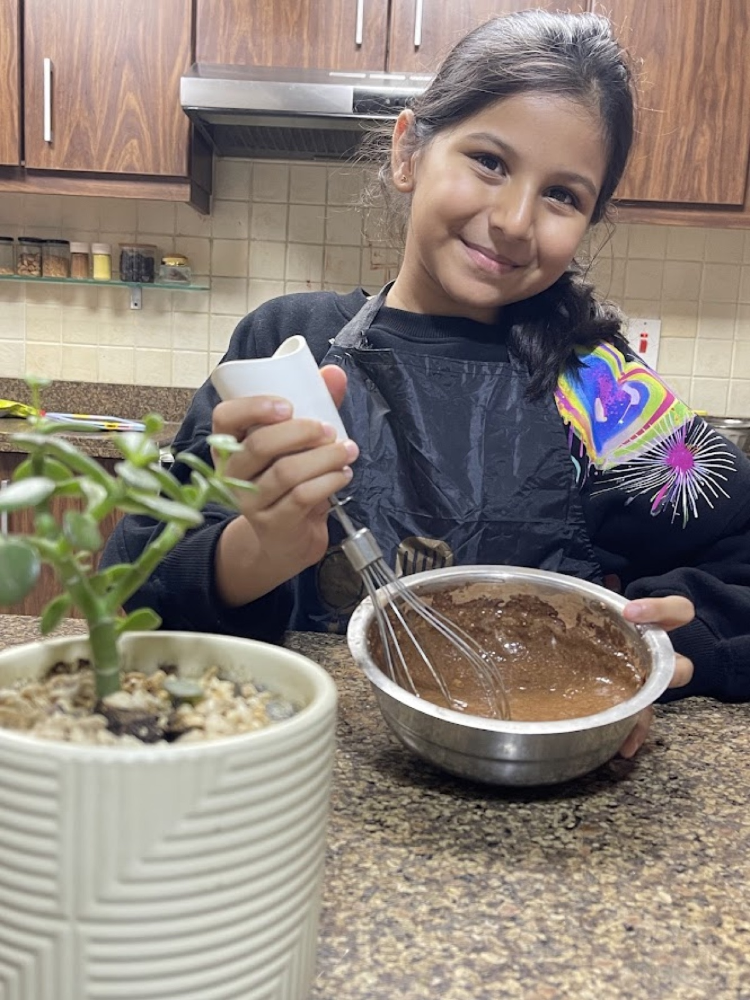
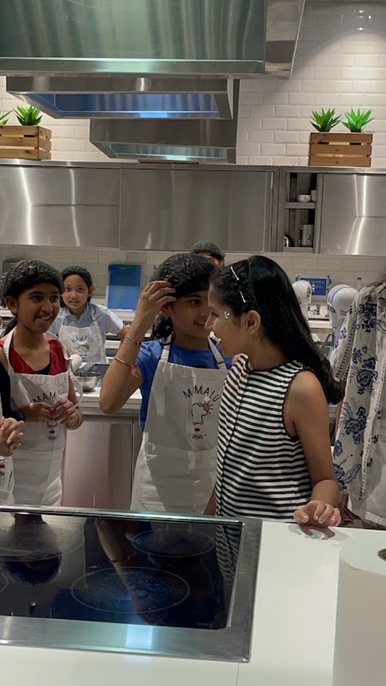
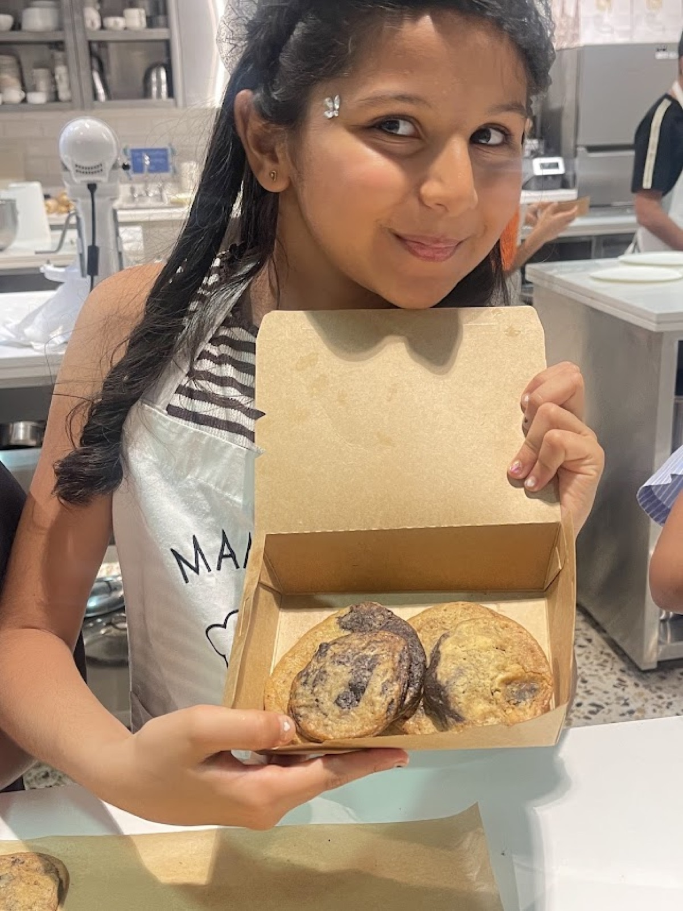
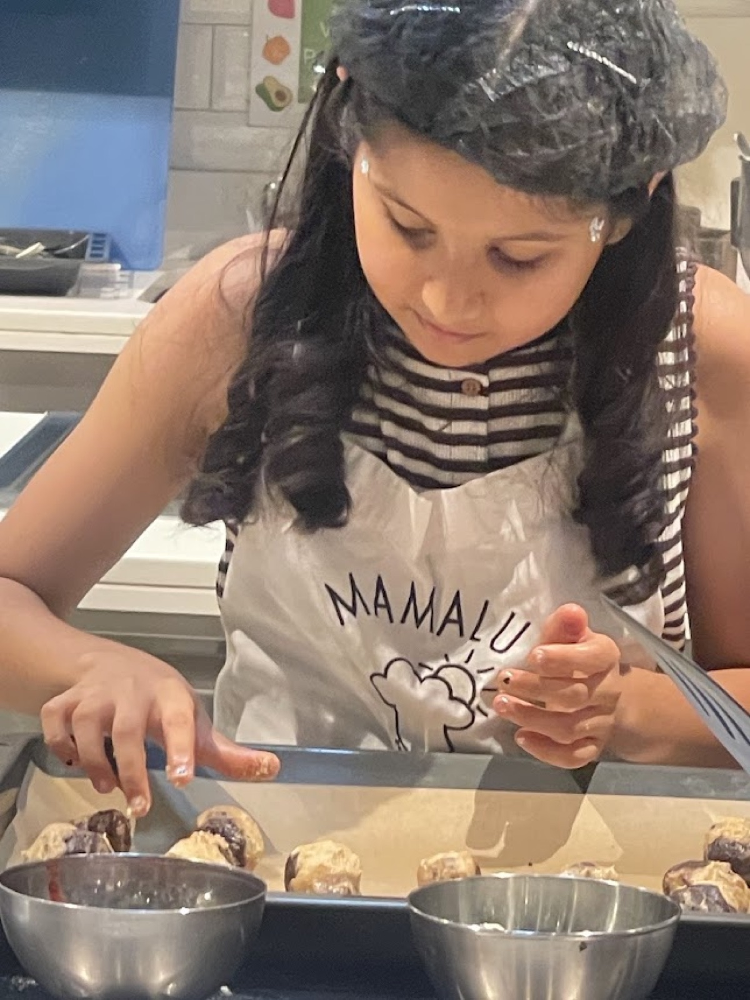

"Why don't you try this one on your own?" I remember that sentence more clearly than almost anything else from that year.
My mum was in the middle of something else, half distracted, and she said it almost like an afterthought — you know what, why don't you try this one on your own. She wasn't making a big announcement out of it. She was busy, and it was genuinely just easier for her if I handled it myself that time.
But it didn't feel small to me. It felt like a door had quietly opened that I hadn't realised was closed.
Up until then, baking had always meant baking with someone. There was always a person nearby to ask, is this the right consistency? or should this go in now? — someone whose answer I could just take and move on. That day, there wasn't. It was just me, a recipe, and a kitchen that suddenly felt a lot bigger than it had the day before.
And once that door opened, I didn't really stop walking through it. I baked more after that. Then more. Then more again, until it stopped being something unusual and just became something I did.
The First Cake That Was Completely Mine
I want to actually walk through what that first one was like, because it wasn't just a nice moment — it was the whole turning point, and it deserves more than a sentence.

I remember reading through the recipe three separate times before I even touched an ingredient, mostly out of fear I'd get halfway through and forget what came next with nobody there to remind me. I laid everything out on the counter first — every ingredient, every bowl, every spoon — because some part of me already knew that stopping halfway to dig through a cupboard was exactly the kind of thing that turns a fine bake into a disaster.
Measuring the flour, I double-checked it against the recipe like it might have changed since the last time I looked. I cracked the eggs slowly, half-convinced I'd get shell in the bowl if I rushed, which of course I still sometimes did anyway. Mixing the batter, I kept stopping to compare it to what I remembered a good batter looking like from all the times I'd watched — was it too thick, too thin, did it need another minute?
There was nobody to ask. That was the entire point, and also the entire terror of it.
When it finally went into the oven, I sat on the kitchen floor for a while just watching the light through the glass, the way you watch something you're not totally sure you trust yet. And when the timer went off and I pulled it out myself, I remember genuinely not knowing what I was going to find until I actually looked.
It wasn't the best cake I've ever made. If I'm honest, it probably wasn't even that good — a little dense in the middle, slightly uneven on top. But none of that mattered nearly as much as the fact that nobody else's hands had been anywhere near it. I had done every part of it, including the part where something didn't come out perfect and I had to just accept that and move on anyway.
That's the moment I actually became a baker, if I had to point to one. Not the cake itself. The fact that I made it completely alone and it was still worth being proud of.
Getting to Know the Oven
Before any of that, though, the oven used to genuinely scare me.
It sounds a little silly saying it now, but for a long time it felt like the one part of baking that was completely out of my control. I could measure carefully, mix carefully, do everything exactly right up until that point — and then I'd have to hand the whole thing over to this hot, closed box and just hope it knew what it was doing. There's a video somewhere of me and my mum learning how to actually operate it together, figuring out which knob did what, how the racks worked, what all the little symbols meant. At the time it felt like learning a whole separate skill that had nothing to do with baking itself.
Getting to know the oven — which knob does what.
It stayed a little intimidating for a while even after that. But once I started baking on my own, I didn't really have a choice except to get comfortable with it. I had to learn to trust the smell more than the timer sometimes, to recognise the difference between a cake that was actually done and one that just looked done through the glass. Slowly, without really noticing it happening, the oven stopped being the scary unpredictable part of the process and became just another thing I knew how to read. That was its own kind of independence, honestly — maybe even a bigger one than the cake itself.
Filming While I Baked
Somewhere along the way, I also started filming while I baked — my mum holding the camera some days, propped up on the counter on others. One of the ones I remember most was a brownie premix video, just me going through the whole process from box to oven to that first bite.
I want to be clear about something, though: filming was never actually the thing I loved. Baking was. The filming just happened to come along with it, because it turned out to be a nice way to actually hold onto these moments instead of only remembering them. I liked watching them back later almost more than I liked making them in the first place — seeing myself figure something out in real time, mistakes included.
Baking My Birthday at Mamalu Kitchen
One of the best surprises of my life came wrapped up as a birthday party. My mum had quietly planned the whole thing without me knowing — a baking birthday party at Mamalu Kitchen, just for me and my friends. I remember walking in and realising what was happening only a few seconds before everyone else did, and that mix of surprise and pure excitement is hard to put into words.

We spent the whole party in aprons, flour on our hands, laughing more than we were actually measuring anything correctly. Everyone got to make their own batch of chocolate chip cookies, and watching my friends — who'd never really baked before — get just as excited over cookie dough as I always did made the whole thing feel even better. We made pizzas too, but the cookies were the part that felt closest to me, because it was the one thing from my own kitchen that I got to bring into the party and share.
It wasn't just a birthday. It was baking turned into something social for the first time — not me alone in a kitchen figuring something out, but a room full of people I loved, all elbow-deep in the same mess, celebrating together. Looking back, it might be my favourite activity turned into the perfect party.
Chocolate Chip Cookies
The recipe that turns a normal afternoon into a party. The bake that never felt like practice.

What You Need
- 1¼ cups all-purpose flour
- ½ teaspoon baking soda
- A pinch of salt
- ½ cup melted butter
- ½ cup brown sugar
- ¼ cup white sugar
- 1 egg
- ½ teaspoon vanilla extract
- ¾ cup chocolate chips
Shaping the cookies at Mamalu Kitchen.
Let's Get Baking
Preheat the oven and line a baking tray with parchment paper.
Whisk the flour, baking soda, and salt together in one bowl.
In another bowl, mix the melted butter, brown sugar, and white sugar until smooth, then beat in the egg and vanilla.
Pour the wet mixture into the dry ingredients and stir just until combined — a few small lumps are fine.
Fold in the chocolate chips.

Scoop rounded spoonfuls onto the tray, spaced apart since they'll spread. This is the step I still remind myself about every time.
Bake until the edges are golden but the centres still look a little soft, then let them cool on the tray before touching them.
What She Took From It
That not every bake has to teach you something new every time. Sometimes the value is in doing something familiar well, over and over, until it stops being a recipe and just becomes something you know how to make.
More Than a Recipe
That first solo cake wasn't just another cake. It was the start of a different stage altogether. I'd gone from helping in the kitchen to actually making decisions in it — learning how ingredients behave, how ovens work, how a recipe can be adjusted, and how a mistake can just be information for the next attempt instead of a reason to stop.
I was also developing something no recipe could teach me directly: my own style. Maybe I like a cake a little softer than the recipe says. Maybe I prefer brownies extra fudgy, even if it means pulling them out earlier than instructed. Maybe I'd rather experiment a little than follow every step exactly. Those preferences just started showing up on their own, the more I baked.
But baking didn't stay just mine for long. Taking classes taught me things I never would have figured out through trial and error alone, and baking with friends taught me something classes couldn't — that the same recipe tastes better when it's made in a room full of people who are excited about it too. Standing in a kitchen at Mamalu on my own birthday, handing out spoons and watching everyone make their own batch of cookies, I understood something I hadn't quite gotten to yet:
"Baking was never really about doing it perfectly alone. It was about being able to do it alone if I had to, and then choosing to share it anyway."
That's really how confidence in baking grows, not from getting one cake perfect, but from making enough of them — alone and with others — to know that if something goes wrong, you can just try again.
I wasn't only helping with the baking anymore. I was starting to become a baker. And somewhere along the way, I started becoming the kind of baker who brings other people into it too.